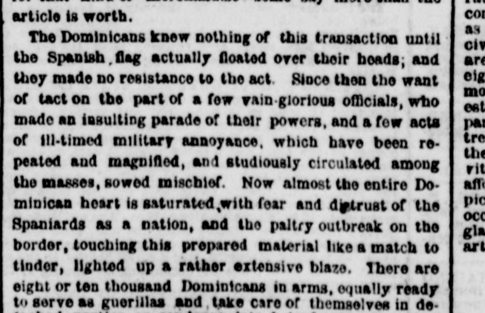
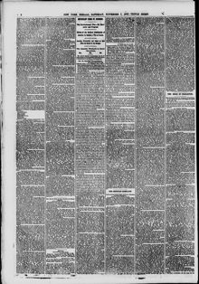

See the full pageVer la página completaIhere are eight or ton thousand Dominicans in arms, equally readyHay ocho o diez mil dominicanos en armas, igualmente dispuestos
According to the newspaper excerpt, eight to ten thousand Dominicans were in arms against Spanish troops, having burned Santiago to dislodge the Spaniards, while Spaniards burned Puerto Plata to deny refuge to natives. Foreigners reportedly handled all the business for both sides and stood to be the only ones with money when the war ended. Additionally, a report at San Cristobal stated the United States consul had a document that would benefit the U.S., following a failed Spanish military movement where the occupying force turned back upon hearing the enemy was accumulating ahead.Según el extracto periodístico, entre ocho y diez mil dominicanos se encontraban en armas contra las tropas españolas tras haber incendiado Santiago para desalojar a los peninsulares, mientras que los españoles quemaron Puerto Plata para privar de refugio a los patriotas. Trascendió que los extranjeros canalizaban el comercio de ambos contendientes y apuntaban a ser los únicos beneficiados económicamente al concluir la guerra. Además, un informe de San Cristóbal señalaba que el cónsul de los Estados Unidos poseía un pliego favorable a su nación, tras un fallido repliegue militar español donde la fuerza expedicionaria retrocedió al conocerse la concentración de tropas enemigas al frente.
FULL TEXT:TRADUCCIÓN:
The Dominicans knew nothing of this transaction until the Spanish flag actually floated over their heads; and they made no resistance to the act. Since then the want of tact on the part of a few vain-glorious officials, who made an insulting parade of their powers, and a few acts of ill-timed military annoyance, which have been repeated and magnified, and studiously circulated among the masses, sowed mischief. Now almost the entire Dominican heart is saturated with fear and distrust of the Spaniards as a nation, and the paltry outbreak on the border, touching this prepared material like a match to tinder, lighted up a rather extensive blaze. There are eight or ten thousand Dominicans in arms, equally ready to serve as guerillas and take care of themselves in de-Los dominicanos no supieron nada de esta transacción hasta que la bandera española actualmente flotó sobre sus cabezas; y no hicieron resistencia al acto. Desde entonces la falta de tacto por parte de unos pocos oficiales vanagloriosos, que hicieron una parada insultante de sus poderes, y unos pocos actos de molestia militar inoportuna, que han sido repetidos y magnificados, y estudiosamente circulados entre las masas, sembraron el mal. Ahora casi todo el corazón dominicano está saturado de temor y desconfianza de los españoles como nación, y el insignificante estallido en la frontera, tocando este material preparado como una cerilla a la yesca, encendió una llama bastante extensa. Hay ocho o diez mil dominicanos en armas, igualmente listos para servir como guerrilleros y cuidarse a sí mismos en de-
The New York Herald. New York, November 7, 1863.
See the original at the Library of CongressVer el original en la Biblioteca del Congreso
Also published as the New York Daily HeraldTambién publicado como New York Daily Herald
Published by: James Gordon BennettPublicado por: James Gordon Bennett
Edition: Morning Edition (Edition 1)Edición: edición de la mañana (edición 1)
Page: 2Página: 2
Frequency: daily (1840–1920)Frecuencia: diario (1840–1920)
Collection: Chronicling America, Library of CongressColección: Chronicling America, de la Biblioteca del Congreso
LCCN: sn83030313LCCN: sn83030313
ISSN: 2474-3224ISSN: 2474-3224
OCLC: 9467138OCLC: 9467138
Call Number: Newspaper E457.5 .N3Signatura (Call Number): Newspaper E457.5 .N3
Rights: public domain, according to the Library of CongressDerechos: dominio público, según la Biblioteca del Congreso